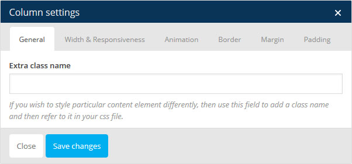

A Complete Guide of Nany Multi-Purpose WordPress Theme - Document Version 1.0
First of all, we want to say thanks you! We are very grateful that you have chosen our theme for your website. We will do everything we can to provide you the best support possible. Feel free asking us if you need more help.
This document covers the Nany structure, set up, and use of this theme and provides answers and solutions to common problems and issues - we encourage you to read this document thoroughly if you are experiencing any difficulties. If you have any questions that are beyond the scope of this document, feel free to ask support. (Support)
Our theme in-builts with simple header options. That's are a default title area, slider and no titles.
Nany Allows 3 types of header. They Are :
This only allows as a page title and breadcrumbs. In all other pages having this type as a default.
Example : Blog Page
This header type allows you to make a slider text-field on Page Options Meta-Box.
Note : When you select Slider in Header Types Then you get Extra text-field on Page Options
Example : Home Page
This header type is hide your page title bar and that breadcrumbs.
In Nany have a Posts, Pages, Testimonials, Portfolio
In Nany theme have 8 types of post formats
If you select different post formats then you can get that format related options under content editor.
Pages is all about Page Templates :
Default Template : It's a WordPress default template. It's about Right Sidebar.
100% Width : In Nany demo pages are created from 100% Width template. This makes your layout as a 100% width(based on screen size).
Blog : If you select this page you can get separate meta boxes. That have plenty of options about blog page. For archive, category and tag pages options from Appearance > Theme Options > Blog Click here.
Full Width Page : This is simply about full width. That means 1170px.
Left Sidebar : This is simply about left sidebar.
Portfolio : If you select this page you can get separate meta boxes. That have plenty of options about portfolio page. For archive, category and tag pages options from Appearance > Theme Options > Portfolio Click here.
Shop Pages : If you select this page you can get separate meta boxes. That have plenty of options about shops page. For archive, category and tag pages options from Appearance > Theme Options > WooCommerce Click here.
Under Construction : This template have a time counter, background image, logo image and some simple content, That's All.
Testimonials have a Title(Client Name), Client Profession, Client Image, Testimonial Content.
You can get these details via shortcode called Testimonial Slider. Shortcode element like below.
Portfolio have three type of layout styles.
Own Styling is about your content editor. You can use own styling if you want minimal like other themes.
Left Image if you select this type then you get other options about Date, Skills, Disable Category List, Add Portfolio Item(Images).
Full Width Image this layout type is mostly related to Left Image. But portfolio image will show full width.
If you install WooCommerce Plugin then you can get. Products in WP sidebar menu.
If you have any doubts about WooCommerce plugin please go through following link documentations :
Nany have some own widgets apart from default widgets of WordPress. That's all are listed below in this image. You can get WooCommerce widgets after installing that plugin.
Nany allows 6 theme locations.
You can select different menus in different pages using Choose Menu metabox in pages.
This option is allows you to Import or Export theme options.
In this theme package Demo Data folder you can get theme-options.txt
Most of global settings in Nany Theme having in Appearance > Theme Options.
Theme Options have :
In General Options you can get accessibility about :
In Header Options you can get accessibility about :
In Color Options you can get accessibility about :
In Typography Options you can get accessibility about 350+ Google Fonts :
In Portfolio Options you can get accessibility about :
In Blog Options you can get accessibility about :
In WooCommerce you can get accessibility about :
In Footer Options you can get accessibility about :
In 404 Page you can get accessibility about :
You can write code for your custom CSS.
You can create unlimited sidebars here. (Read that descriptions).
This shortcode lists are only for Process & Timeline shortcodes.
All custom shortcodes are listed here. You can use them for your content styling.
Nany theme have 88 shortcodes, including Visual Composer default shortcodes & WooCommerce Shortcodes.
Shortcodes have Design tab you can edit them like font size and color there.
Nany theme have some tips and tricks for you to make even better from live demo.
Row is most needed shortcode for Nany Theme. So, please read carefully in coming explanations.
General : Extra Class Name, Row ID(Menu Usage), Center Row Content(If you use 100% Width Page Template you should check this). Remove Right & Left spaces is removing each element spaces. Sections nubs is about nany theme design. You can create your own nub and upload it here by selecting Custom Nub.
Design : Visibility, Text Color.
Background : Background Color, Background Image Style, Enable Parallax, Need Background Overlay, Background Image.
Video : Enable Video Background.
Border : Border Style, Border Color, Border Width.
Margin : Top, Bottom. Right, Left.
Padding : Top, Bottom. Right, Left.
Column have some extra option to make even better.
General : Extra Class Name.
Width & Responsive : Width, Responsiveness.
Animation : Animation Style, All animations from Animate.css.
Border : Border Style, Border Color, Border Width.
Margin : Top, Bottom. Right, Left.
Padding : Top, Bottom. Right, Left.
Use this class form-one on column extra class field for if you need like this form style click here.
Normal Contact Form :
[text* your-name placeholder "Name"]
[email* your-email placeholder "Email"]
[textarea your-message placeholder "Message"]
[submit "Submit"]
Nany - Creative Multi-Purpose WordPress Theme
----------------------------------------------------
30/01/2015 - Version 1.0
- RELEASE
Images :
All images have been used for demonstration purposes only and are not included in this theme package.
Once again, thank you so much for purchasing this theme. As I said at the beginning, I'd be glad to help you if you have any questions relating this theme. If you have any suggestions on how to improve our themes or documentation please share them!
Need Support Click Here.